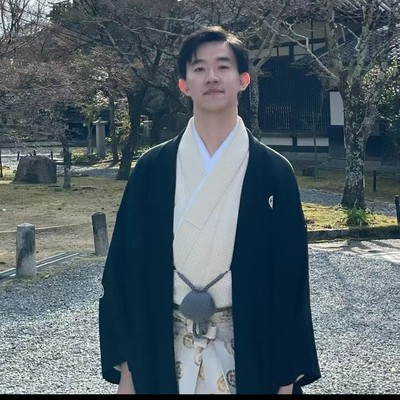

2026–2027 MBA Coaching
Three in one.
From the Founder
I started Superpower Coaching because I kept seeing the same thing: brilliant people talking themselves out of applying to top programs, convinced they weren't "the right type."
The truth? The schools that matter aren't looking for perfect profiles. They're looking for people who know exactly who they are — and can articulate why an MBA is the next chapter in a story that only they could tell.
That's where the Superpower Exercise comes in. It's not a writing prompt. It's a process of excavation. We help you find the thread that runs through everything you've done — and build your entire application around it.
I work with a small, selective cohort each year. No volume. No templates. No ghostwriting. Just real mentorship from someone who's been through this, believes in you, and will push you until your application is undeniably, authentically yours.
— Lisa Qiya Li · Harvard Business School Graduate · Founder, Superpower Coaching
Ideal Fit
One of the biggest myths about getting into a top US business school is that you need perfect credentials. You don't. You need a compelling story.
We don't require any of this:
You're ready to do the hard introspective work to find your authentic story — not just list your accomplishments.
You want a mentor, not a ghostwriter. You're committed to owning every word of your application.
You're applying because an MBA is the right next chapter in your story — not because everyone else is doing it.
Why Choose Us
Seven things we do differently — and why they matter.
Our signature methodology. We don't start with essays — we start with excavation. You'll uncover the through-line that connects everything you've done, and build your entire application around it. This framework doesn't just get you into an MBA program. It's the foundation for how you tell your story for the rest of your career.
Lisa doesn't just edit your essays. She gets into your head. She'll challenge your assumptions, push you toward insights you didn't know you had, and nudge you in the right direction — even when that direction is uncomfortable. High-touch, high-impact mentorship from someone who's been through it.
Other consultants offer polished drafts. We don't. Every word has to come from you — because shortcuts produce essays that sound like someone else. When you walk into an interview, you need to own your story completely. We help you find it, shape it, and tell it in your own voice.
Getting in is one thing. Paying for it is another. Over 80% of our students received merit scholarships — because we help you understand your leverage and negotiate strategically. An admit without scholarship money is a half-win. We play for the full win.
This isn't a transaction. Once you're a Superpower Coaching client, you're connected to a growing community of ambitious professionals across HBS, GSB, Wharton, and beyond. Lisa actively connects clients with each other for career advice, deal flow, and support — and the relationship is reciprocal, not one-directional.
We work with approximately 10 students per year. Not because we can't scale — but because we won't. Mutual fit is required. We turn down clients who aren't the right match, and we expect clients to choose us for the right reasons too. No revenue pressure means no compromises.
Lisa is supported by a team of HBS and M7 graduates with deep expertise across industries and MBA programs. Their network becomes yours. When you need a connection, a reference, or an insider perspective on a program, we make the introduction.
The Process
Ten steps from where you are now to where you want to be.
We start by understanding your profile, goals, and what makes you uniquely compelling. Together we build a school list and positioning strategy tailored to you — not a template.
Identify gaps and opportunities before applications open. Whether it's a promotion, a side project, or a community role — we help you make strategic moves that strengthen your story.
Deep-dive into program culture, curriculum, and placement. We help you build a balanced school list with reach, target, and likely programs — and understand what each school is actually looking for.
MBA résumés are a different format. We help you reframe your work experience for a business school audience — quantifying impact, highlighting leadership, and positioning you for your target schools.
Your recommenders are your advocates. We guide you on selecting the right people, briefing them effectively, and making sure their letters reinforce — not contradict — your narrative.
This is where the magic happens. The Superpower Exercise begins — excavating your authentic story, finding your through-line, and building every essay around it. Unlimited rounds of feedback until every word is unmistakably yours.
The details matter. We review every component of your application — activities, short answers, optional essays — to ensure nothing is left on the table.
Before you submit, your complete application gets a final review from our team — multiple HBS and M7 grads reading it with fresh eyes, identifying anything that could be stronger.
We run mock interviews calibrated to each school's format — HBS case method, GSB values-based, Wharton team-based. You'll walk in having already done it under pressure, multiple times.
Admitted? We help you negotiate scholarships and compare programs. Waitlisted? We craft your LOCIs. Multiple admits? We help you make the right choice for your goals.
What They Say
I was referred to Superpower Coaching 26 days before Stanford's R1 deadlines. I decided to work with Lisa not only because of her strategic insights, formidable work ethic, and storytelling skills, but also because she has a surreal ability to bring out my inner voices. Lisa has an incredibly high standard, which she holds me against in every interaction. Together, we did the impossible — getting into the GSB!! I highly recommend working with Superpower Coaching.

I evaluated 20+ MBA consultants before choosing to work with Superpower Coaching. Lisa struck me as the most insightful (and encouraging). She never shied away from challenging my thinking. She gave me actionable feedback on every single essay, which saved me big time as I was juggling a very demanding job. I learned so much about writing and storytelling — esp. how to pack more words into a limited word count. With Lisa's and her team's help, I got scholarship offers ($100k+) from every program I applied to.
Working with Superpower Coaching was one of the best decisions I've ever made!! Lisa is a master of storytelling and drilled into me the principle of "show, not tell." I couldn't imagine learning so much about myself within such a short time. I most appreciated her rapid essay feedback during the holiday season — not sure if she ever slept?! Her comments were sharp, action-oriented, and always uplifting. Most importantly, she never ever doubted me... I got into Sloan and CBS, both with $100k+ scholarships.
I applied to only my top programs (HBS and Wharton) and struggled with finding my edge in an over-represented candidate pool. I made up my mind to work with Superpower Coaching 10 mins into my intro call. Lisa impressed me with her knowledge of every program, not just HBS. She was extremely responsive and pointed me in the right direction throughout the application. I could never have got to the same level of insights into Wharton with my own research. Plus, I also got an interview invite from HBS!
Get Started
We take on 8–10 students per year. Start with a free, no-commitment intro call — it's the best way to see if we're a good fit.
Book a Free Intro Call →Questions
A deferred MBA is essentially a guaranteed ticket to an elite club — secured before you graduate, before your first professional role even begins. Most people treat it as an insurance plan. I think it's more than that: it's preview access to a network of extraordinary alumni, and a branding advantage that opens doors for you before your peers even know those doors exist.
Timing matters because you can absolutely apply as a regular MBA candidate later in your career — but getting in before you start means an enormous amount of pressure comes off your shoulders from day one. Beyond that, going through the application process is formative in itself. You learn more about yourself earlier. You develop sharper self-awareness. You tell stronger stories later in your career. That compound advantage is hard to overstate — it's one of the most underrated ways to get ahead.
Ideally, your first semester of college. There's a lot of intentional planning that goes into the deferred MBA process — especially if you're targeting HBS, Stanford GSB, or Wharton. What most candidates don't realize is that by the time they're ready to apply, it's already kind of late. They haven't been thoughtful about academic planning or career choices, so the whole process becomes backward: trying to fit what admissions committees want, rather than building a story around what you actually want. Starting early fixes that. You get to be intentional — not reactive.
This is where I shine as a coach. I believe everyone has a superpower — they just haven't been told. Most early-career professionals haven't had a mentor who reinforces their strengths, holds up a mirror, and is honest with them about what they're good at and what to work on. That person is often missing.
I'm that person for you. The Superpower Exercise is my process for finding it. Our sessions involve me asking a lot of questions — about who you are, what motivates you, what lights you up. There's real soul-searching involved. Some experimenting — at work, in extracurriculars. But honestly, it's one of the most engaging parts of the whole journey. For both of us.
The honest answer: most clients who commit to a comprehensive approach — a full, balanced school list — don't leave empty-handed. When you're executing at a high level across the right mix of programs, the odds are very much in your favor.
Where it gets harder is when someone says, "I only want HBS or Stanford, nothing else." I respect that. But I'll be direct: no one can guarantee admission to programs with under 10% acceptance rates, and I won't pretend otherwise. If you choose to go narrow, that's a conscious risk — and we'll have that conversation honestly before you commit.
The question I always ask: what's your actual goal — attending a specific school, or building the career and life you want? For most people, those aren't the same thing.
No — and this is intentional. We don't share past essays because we never want you anchoring to someone else's story. Your application has to be entirely yours. What we will share: frameworks, feedback principles, and our methodology for finding your superpower. The output belongs to you alone.
Fit and mentality — that's what I'm looking for. I want to see evidence that we can speak the same language, that you have a growth mindset, and that you genuinely want to push yourself toward something great.
I hold a high standard for my clients, and I expect them to respect that. That means being willing to grow, and being able to take constructive feedback without taking it personally.
The best way to find out? Book a complimentary intro call — I run one with every prospective client. If you leave that call energized and challenged, if my style resonates, that's a strong signal we'll work well together.
Lisa leads every engagement personally. The broader team — HBS and M7 grads across industries — contributes through the pre-submission committee review, specific school expertise, and network introductions. You always know who's reading your work and why their perspective is relevant to your application.
Consider the math: an MBA from HBS or GSB costs $250,000+ when you factor in tuition and two years of foregone income. A single merit scholarship negotiation often returns 3–5x the coaching fee. Beyond dollars, the right school changes the trajectory of your career for decades. We're biased — but so is the data.